imblearn.metrics.pairwise.ValueDifferenceMetric¶
-
class
imblearn.metrics.pairwise.ValueDifferenceMetric[source]¶ Class implementing the Value Difference Metric.
This metric computes the distance between samples containing only nominal features. The distance between feature values of two samples is defined as:
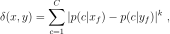
where 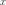 and 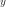 are two samples and 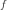 a given feature, 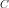 is the number of classes, 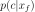 is the conditional probability that the output class is 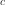 given that the feature value has the value and 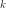 an exponent usually defined to 1 or 2.
The distance for the feature vectors 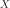 and 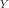 is subsequently defined as:
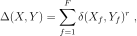
where 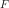 is the number of feature and an exponent usually defined equal to 1 or 2.
The definition of this distance was propoed in [1].
Read more in the User Guide.
- Parameters
- n_categories“auto” or array-like of shape (n_features,), default=”auto”
The number of unique categories per features. If
"auto", the number of categories will be computed fromXatfit. Otherwise, you can provide an array-like of such counts to avoid computation. You can use the fitted attributecategories_of the :class:`~sklearn.preprocesssing.OrdinalEncoder`to deduce these counts.- kint, default=1
Exponent used to compute the distance between feature value.
- rint, default=2
Exponent used to compute the distance between the feature vector.
- Attributes
- n_categories_ndarray of shape (n_features,)
The number of categories per features.
- proba_per_class_list of ndarray of shape (n_categories, n_classes)
List of length
n_featurescontaining the conditional probabilities for each category given a class.
Notes
The input data
Xare expected to be encoded by anOrdinalEncoderand the data type is used should benp.int32. If other data types are given,Xwill be converted tonp.int32.References
- 1
Stanfill, Craig, and David Waltz. “Toward memory-based reasoning.” Communications of the ACM 29.12 (1986): 1213-1228.
Examples
>>> import numpy as np >>> X = np.array(["green"] * 10 + ["red"] * 10 + ["blue"] * 10).reshape(-1, 1) >>> y = [1] * 8 + [0] * 5 + [1] * 7 + [0] * 9 + [1] >>> from sklearn.preprocessing import OrdinalEncoder >>> encoder = OrdinalEncoder(dtype=np.int32) >>> X_encoded = encoder.fit_transform(X) >>> from imblearn.metrics.pairwise import ValueDifferenceMetric >>> vdm = ValueDifferenceMetric().fit(X_encoded, y) >>> pairwise_distance = vdm.pairwise(X_encoded) >>> pairwise_distance.shape (30, 30) >>> X_test = np.array(["green", "red", "blue"]).reshape(-1, 1) >>> X_test_encoded = encoder.transform(X_test) >>> vdm.pairwise(X_test_encoded) array([[ 0. , 0.04, 1.96], [ 0.04, 0. , 1.44], [ 1.96, 1.44, 0. ]])
-
fit()[source]¶ Compute the necessary statistics from the training set.
- Parameters
- Xndarray of shape (n_samples, n_features), dtype=np.int32
The input data. The data are expected to be encoded with a
OrdinalEncoder.- yndarray of shape (n_features,)
The target.
- Returns
- self
-
get_params()[source]¶ Get parameters for this estimator.
- Parameters
- deepbool, default=True
If True, will return the parameters for this estimator and contained subobjects that are estimators.
- Returns
- paramsdict
Parameter names mapped to their values.
-
pairwise()[source]¶ Compute the VDM distance pairwise.
- Parameters
- Xndarray of shape (n_samples, n_features), dtype=np.int32
The input data. The data are expected to be encoded with a
OrdinalEncoder.- Yndarray of shape (n_samples, n_features), dtype=np.int32
The input data. The data are expected to be encoded with a
OrdinalEncoder.
- Returns
- distance_matrixndarray of shape (n_samples, n_samples)
The VDM pairwise distance.
-
set_params()[source]¶ Set the parameters of this estimator.
The method works on simple estimators as well as on nested objects (such as
Pipeline). The latter have parameters of the form<component>__<parameter>so that it’s possible to update each component of a nested object.- Parameters
- **paramsdict
Estimator parameters.
- Returns
- selfestimator instance
Estimator instance.